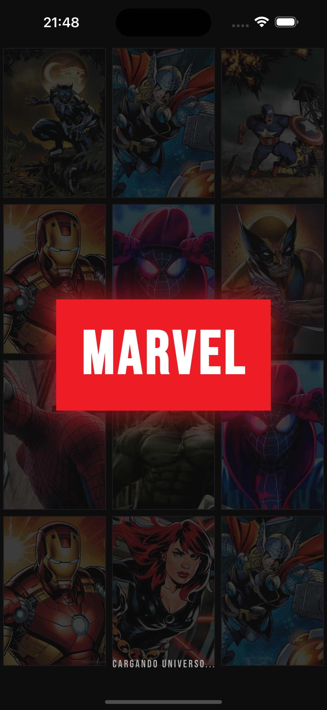

.env.heroes.json."Diseño inteligente: alta velocidad para datos locales y alta potencia para conocimiento global."
/api/actualizar-video-marvel.php con Bearer token
Para fines de guía técnica y transparencia, ciertos endpoints (como reset-demo.php o APIs de métricas) son públicos por diseño. En un entorno productivo real, estos estarían protegidos por capas de Auth y VPN.
Staging y Producción) con etiquetas semánticas (Git tags) y trazabilidad vía historial de commits.
Implementación de una Quality Gate obligatoria antes de cada subida a producción:
La seguridad no termina en el deploy. Monitoreo sintético recurrente:
Infraestructura avanzada de despliegue mediante un centro de operaciones visual:
El proyecto no es solo una aplicación aislada, sino un sistema orquestado que interactúa con múltiples servicios externos para garantizar datos reales, inteligencia y observabilidad.
fetch() desde el navegador cuando CORS lo permite. Los azules se validan por integración y CI/CD.
Protocolo de verificación de firma para la comunicación segura entre microservicios:
trace_id único que se propaga entre microservicios para correlacionar logs end-to-end.
| vote_average | Numérico | 0-1 normalizado |
| release_year | Numérico | 2008-2030 range |
| overview_length | Numérico | max 500 chars |
| overview_words | Texto | Jaccard + stop words |
gp3 (Ahorro 20%)| Proveedor | Recurso | Coste Final |
| Google Cloud | VM + Disk | ~$1.00 /mes ✅ |
| Amazon (AWS) | EC2 + Traffic | $0.00 (Free Tier) |
GCP→track(click) ✅AWS→track(click) ✅onRecover → flushQueue() 🔁
Sistema de respaldo MySQL implementado siguiendo estándares enterprise (ISO 22301 · Regla 3-2-1). El mismo patrón que usan bancos, aseguradoras y plataformas SaaS.
gzip -9) · mysqldump--single-transaction (InnoDB)Este proyecto nació con la idea de convertirse en una base de trabajo y una guía personal para aplicar, de forma real, los conocimientos adquiridos. Comenzó como un espacio práctico donde ir trasladando lo aprendido al código, casi como un cuaderno técnico llevado a la práctica.
Antes de este máster, mi enfoque estaba centrado en que el software funcionara. Hoy, este proyecto refleja un cambio: estructura, criterio, arquitectura, seguridad y responsabilidad técnica forman parte del proceso desde el inicio.
Clean Marvel Album no pretende ser un producto comercial ni una solución disruptiva. Es, ante todo, una base sólida y reutilizable, pensada como referencia para desarrollar futuros proyectos con una mentalidad más madura y profesional.
Más allá de las herramientas aprendidas, este máster ha supuesto un punto de inflexión en mi forma de pensar, diseñar y construir software.
Un momento que lo cambió todo: en octubre de 2025, en pleno desarrollo del Máster, AWS us-east-1 sufrió una caída masiva que dejó fuera de servicio a miles de empresas durante horas — Netflix, Twitch, Disney+ entre ellas, con pérdidas millonarias. Ver el caos que generó depender de un solo proveedor fue lo que me inspiró a diseñar e implementar el Failover Multi-Cloud automático entre GCP y AWS. Entendí que la resiliencia no es un lujo teórico, sino una necesidad absoluta en el mundo real, y decidí aplicar este patrón aislando el microservicio del Heatmap para que fuera capaz de sobrevivir a un escenario idéntico.
Lo que más me impactó: descubrir que una arquitectura bien pensada no solo beneficia a los humanos, sino también a las herramientas de IA. A lo largo del desarrollo, utilicé varios asistentes de inteligencia artificial, y todos navegaron el proyecto con fluidez, entendiendo la estructura, sugiriendo mejoras coherentes y respetando los patrones establecidos. Fue como si el código limpio hablara un idioma universal. La buena arquitectura enamora hasta a las máquinas.
Uso Académico: Este proyecto ha sido desarrollado exclusivamente con fines educativos y de investigación como Trabajo Final de Máster (TFM) para Big School.
Propiedad Intelectual: Todos los datos, imágenes y nombres relacionados con personajes de Marvel son propiedad de © 2026 MARVEL. El proyecto utiliza activos descargados exclusivamente para fines demostrativos.
Sin Ánimo de Lucro: El sistema no tiene objetivos comerciales ni genera beneficios económicos.
Assets property of © 2026 MARVEL